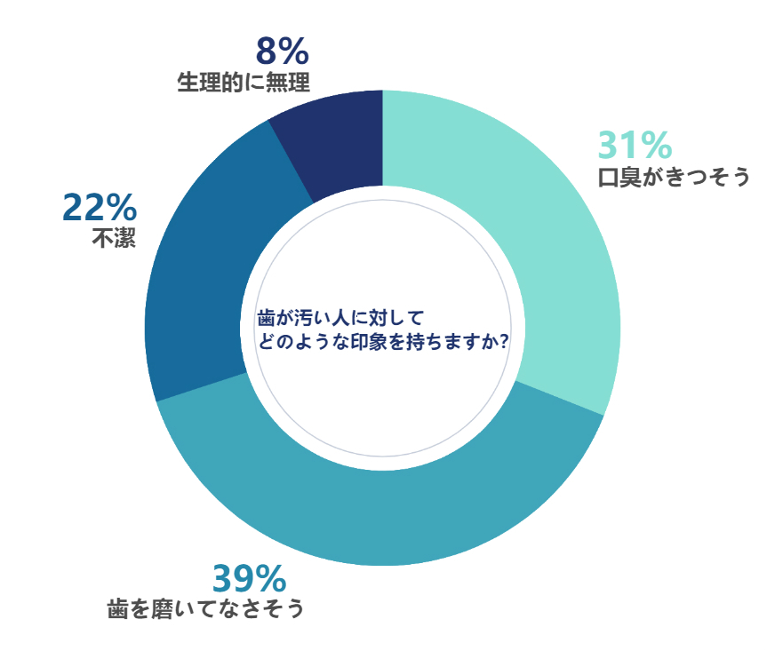

ホワイトニングについて
歯は本来白いものだという既成概念
実は結構見られてる！？ 異性の歯が相手に与える印象

「男女500人に異性の歯が与える印象」について調査を行ったところ以上のような調査結果になりました。
「歯は何色ですか？」と質問すればほとんどの人が「白色」と答えるのではないでしょうか。
歯＝「白い物」と考える私たちにとって、黄ばんでいる歯は「汚れ」を連想させます。
ホワイトニングの欧米と日本の意識の違い

欧米では審美歯科の意識が高く、白くきれいな歯を保っている人が多くいます。
特にビジネスシーンでは「白くきれいな歯でないとエリートでない」という考えもあるといいます。
ホワイトニングが当たり前になっているからこそ欧米は白くきれいな歯の人が多いのです。
それに比べ、日本人はホワイトニングに対しての意識が欧米よりは低いのが現状です。
アンケート結果では「興味はあるがやったことはない」という人が84％、実際にやったことがある人は9％しかいないのが日本人のホワイトニングに対する意識の現状です。